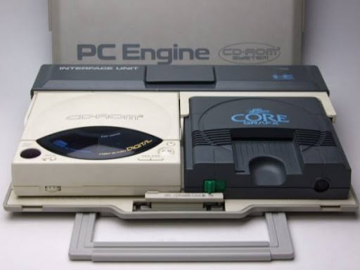

Evolution of Console

PC 엔진
_ 1987
8비트 게임기지만, 그걸 메꾸고도 남는 부품들 성능 덕에 4세대로 분류되는
게임기
내장 그래픽 칩셋은 16 bit지만 CPU가 8 비트라 반쪽짜리 16비트
게임기이다. PC 엔진은 다른 게임기들과 다르게 휴카드라는 저장 매체를
사용하다 CD로 문제점 해결
하지만 추가 주변기기를 달지 않으면 저장이 안된다는 점이 아쉽게
평가된다.
메가 드라이브
_ 1988
세가 마스터 시스템 후속작이자 세가의 명작 게임기, 최초의 완전한 16
비트 게임기이다.
뛰어난 성능을 바탕으로 세가의 오락실 게임들을 가정으로 충실하게 옮겨온
메가드라이브는 세가 게임기 중 가장 많이 팔린 게임기다.
네오지오
_ 1990
SNK가 출시한 가정용 게임기, 성능 면에서 슈퍼 패미컴과 대등한 성능을
보여준 게임기지만 가격이 높은 편이었다.
하지만 비싼 가격에도 오락실을 주름잡던 SNK 게임들을 그대로 가정으로
옮긴, 살 수 있다면 누구나 사고싶은 게임기였다.
슈퍼 패미컴
_ 1990
4세대 게임기 중 대장 자리를 거머쥔 게임기, 성능도 성능이지만 가격도
낮은 편에 닌텐도가 패미컴 시절부터 엮어놓은 서드파티들이 쏟아낸
게임들이 많은 역할을 했다.